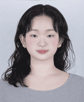
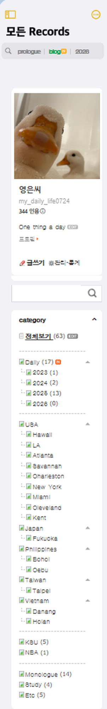
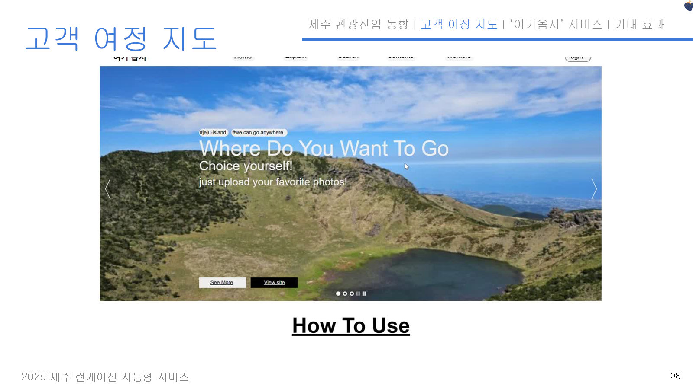
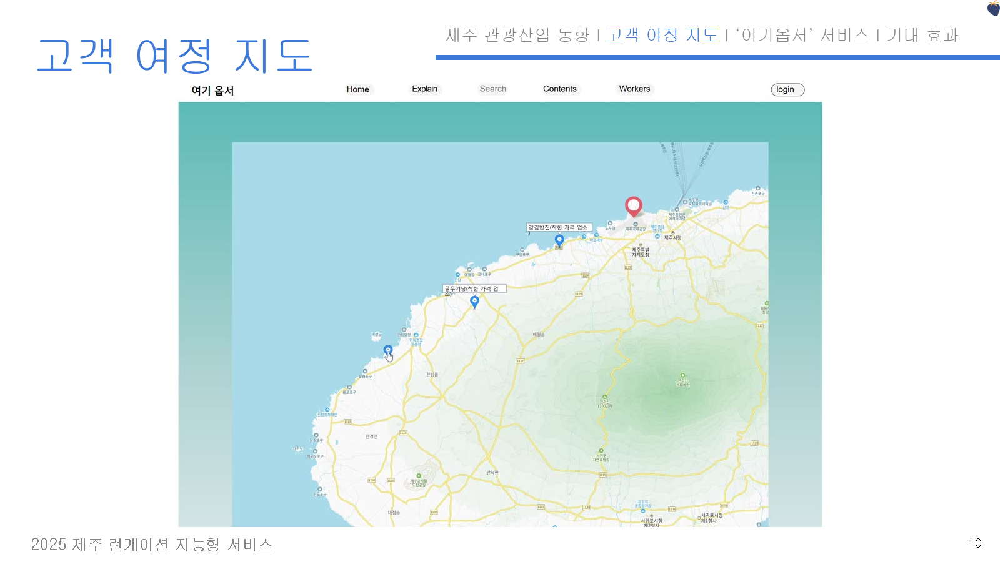

블로그 '모든 Records'CatBoost · LightGCN · MF-SGD 비교로 여행 만족도 예측 NDCG 0.9555를 낸 학부연구, Django 웹 데모로 본선에 오른 AI 해커톤, 반도체 OHT 정체의 개입 기준을 설계한 물류 프로젝트.
세 프로젝트에서 같은 일을 했습니다. 기술이 어떻게 작동하는지 이해하고, 그것이 어떤 의사결정을 바꾸는지 숫자로 정리하는 일입니다. 모델을 '1위'로 고르지 않고 트레이드오프로 설명했고, 기능을 다 넣지 않고 사용자 불만에 가장 가까운 것부터 v1에 넣었습니다.
기록하고, 떨어져서 분석하고, 쓸모 있는 답을 찾는 습관이 그대로 PM의 일하는 방식이 됐습니다. 엔지니어와 같은 언어로 범위를 좁히고, 그 결과를 비즈니스 숫자로 보고하겠습니다.
모델 실험 설계부터 서비스 범위 결정, 운영 지표 설계까지 데이터와 제품 사이를 잇는 역량을 프로젝트에서 직접 사용했습니다.
리뷰 기반 추천은 작성자의 선택적 참여로 극단 경험이 과대 표현됩니다. 실제 방문과 만족도가 함께 남는 AI Hub 여행 로그(수도권, 약 2만 8천 세션)로 '방문지 만족도 예측' 문제를 다시 정의했습니다.
| Model | NDCG | MAE | RMSE | P@K | R@K | Std |
|---|---|---|---|---|---|---|
| CatBoost | 0.9555 | 0.6890 | 0.8628 | 1.0000 | 0.0021 | 0.0784 |
| LightGCN | 0.9528 | 0.7002 | 0.8693 | 1.0000 | 0.0021 | 0.0052 |
| MF-SGD | 0.9409 | 0.7003 | 0.8695 | 0.4000 | 0.0008 | 0.0189 |
추천은 '맞히기'가 아니라 '순서 매기기' 문제. 정확도 하나로 모델을 고르면 안정성을 놓친다.
데이터 · AI Hub 국내 여행 로그
수도권 · 약 2만 8천 세션
Tree · MF · Graph 3계열을 같은 조건에서 20회 배깅. NDCG를 주 지표로, MAE · RMSE · Std로 보완.
피처 · 여행 목적 · 스타일 8종
동기 · 연령 · 동반자 · 방문지
정확도는 CatBoost, 일관성은 LightGCN. 결론을 '1위 모델'이 아닌 선택 기준으로 제시.
MF-SGD는 Precision@K 0.40으로
추천 품질에서 배제
사진 한 장을 올리면 분위기가 비슷한 제주 관광지 Top-3를 추천하고, '저렴이' 가격 필터로 예산에 맞는 장소를 함께 보여주는 외국인 여행자용 웹 서비스입니다.

메인 · 사진 업로드
지도 · 착한 가격 업소첫 제주를 찾는 외국인 여행자는 정보가 많아도 분위기와 예산을 동시에 맞추는 장소를 찾기 어렵다 → 문제를 '탐색 비용'으로 정의했습니다.
데모 이후 '비슷한 곳'이 곧 '만족할 곳'은 아니라는 한계가 보였습니다. 이 질문이 다음 학기 S-CURT 만족도 예측 연구의 출발점이 됐습니다.
팹 Center Loop의 상습 정체에 대해 관리자가 언제 개입해야 하는지 객관적 기준이 없어, 대응이 경험에 의존하던 문제를 다뤘습니다.
핵심 프로젝트 밖에서도 낯선 시스템을 넘겨받아 고치고, 흩어진 정보를 하나의 기록 체계로 묶고, 아이디어를 직접 만들어 봤습니다.